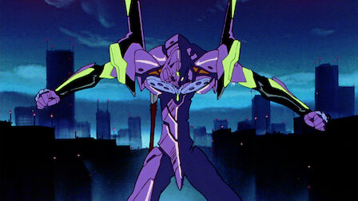
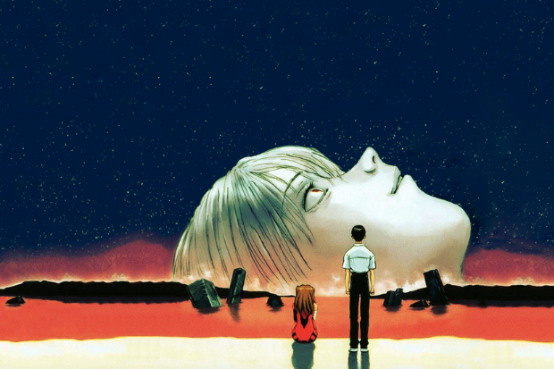
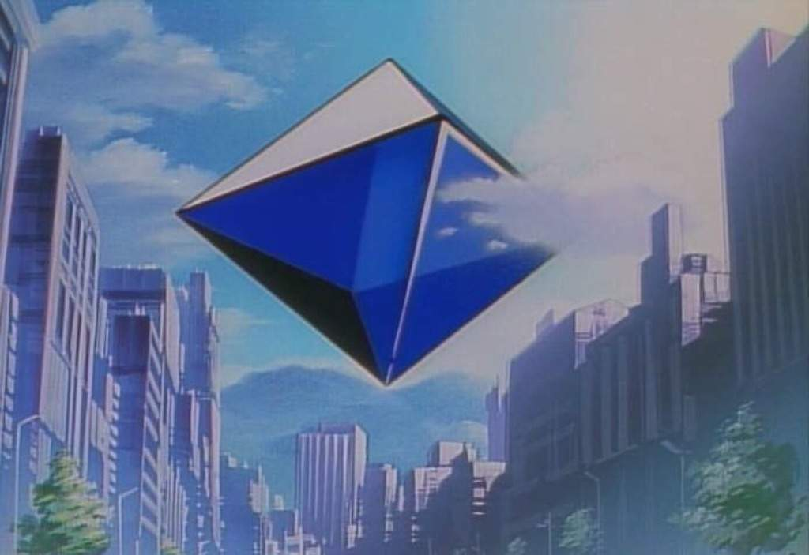
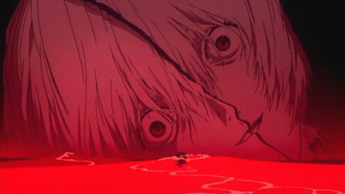

Evangelion, um dentre os animes mais influentes da década de 90.
Neo Genesis Evangelion foi um anime produzido pelo estudio Gainax e animado pelo estudio Tatsunoko, sendo exibido primeiramente na TV Tokyo estreando em 4 de outubro de 1995. O mesmo obteve uma boa repercursão e aprovação por parte do público que contínua ainda hoje criando novos fãs entre a comunidade otaku.
Para além de um anime de mecha, Evangelion trouxe consigo discurções filosóficas e socias, como por exemplo o dilema dos porcos espinhos, parábola essa proposta pelo filósofo Arthur Schopenhauer e tambeém dilemas sobre a natureza humana, como nos portamos em sociedade e questões psicologiacas.
História
Na trama acompanhamos um futuro pós-apocalípico onde a humanidade enfrenta criaturas chamadas Anjos, com o intuito de combatelas e criada a Nerv uma organização paramilitas que controla os Evas, gigantecos mechas que lutam contra os Anjos. Nosso protagonista Shinji Ikari e forçado a pilotar o EVA-01 pelo seu pai ao qual não tem uma boa relação já que o mesmo o abandonou, além do Shinji temos outro pilotos como a Asukae Rei Ayanami.
O despertar dos Anjos
No anime com a chegada de um ser celetial chamado Adão ocorre o surgimento da vida na terra, no entanto, acaba vindo a terra outo ser Lilith ao qual a humanidade e filho, ocorre que esses dois seres não poderiam coexistir mas devido a um erro em neutralizar Lilith os humanos são criados pela mesma, enquanto os anjos são criados por Adão, esse evento ficou conhecido como Primeiro Impacto.
O Segundo Impacto ocorre quando a humanidade descobre a existência dos Anjos, esse evento ocorre quando Adão e descoberto pela organização SEELE ao tentar despertalo ocorreu uma gande explosão que por consequência derreteu as calotas polares e causou uma elevação drástica do nível do mar, alterando o clima global e exterminando metade da população da Terra. Oficialmente, a ONU alegou que o desastre foi causado pelo impacto de um meteoro, mas, na realidade, foi consequência da ativação de Adão e da liberação de uma energia semelhante à do Primeiro Impacto.

Projeto de Instrumentalização Humana
O Projeto de Instrumentalização Humana é o plano final da organização SEELE para a evolução forçada da humanidade. Seu objetivo é eliminar as barreiras entre as mentes humanas, unificando todas as consciências em um único ser coletivo, removendo assim o sofrimento causado pela solidão e pelas inseguranças individuais. Para isso, a SEELE busca provocar o Terceiro Impacto, utilizando os EVAs, os Anjos e a energia de Lilith para desencadear esse processo. Gendo Ikari, no entanto, possui seus próprios interesses no projeto, tentando moldá-lo de acordo com seus desejos pessoais. A instrumentalização é um dos temas centrais de Neon Genesis Evangelion, levantando questões filosóficas sobre identidade, existência e a natureza dos relacionamentos humanos.
